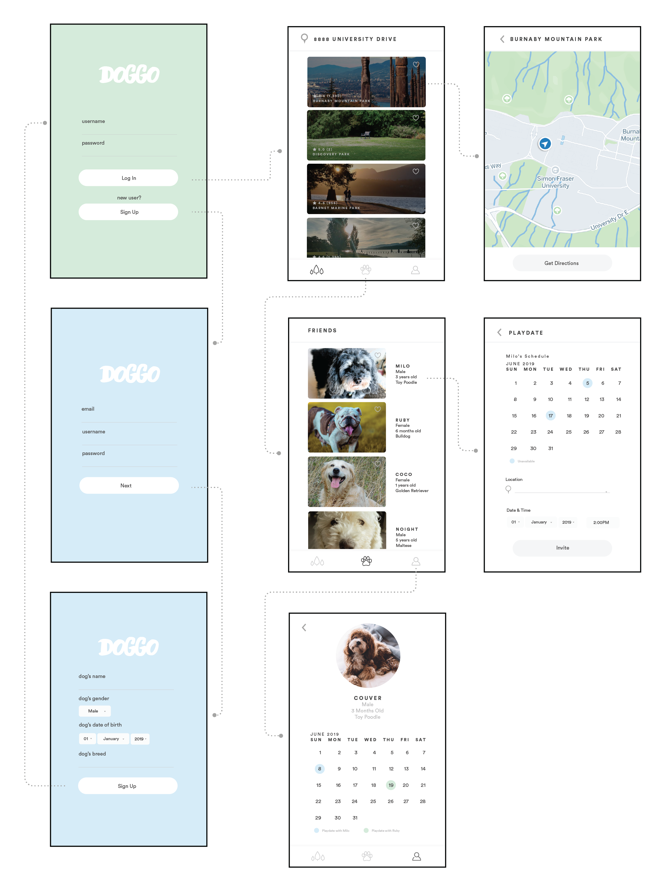
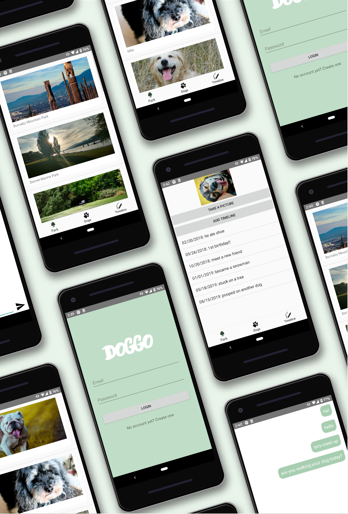
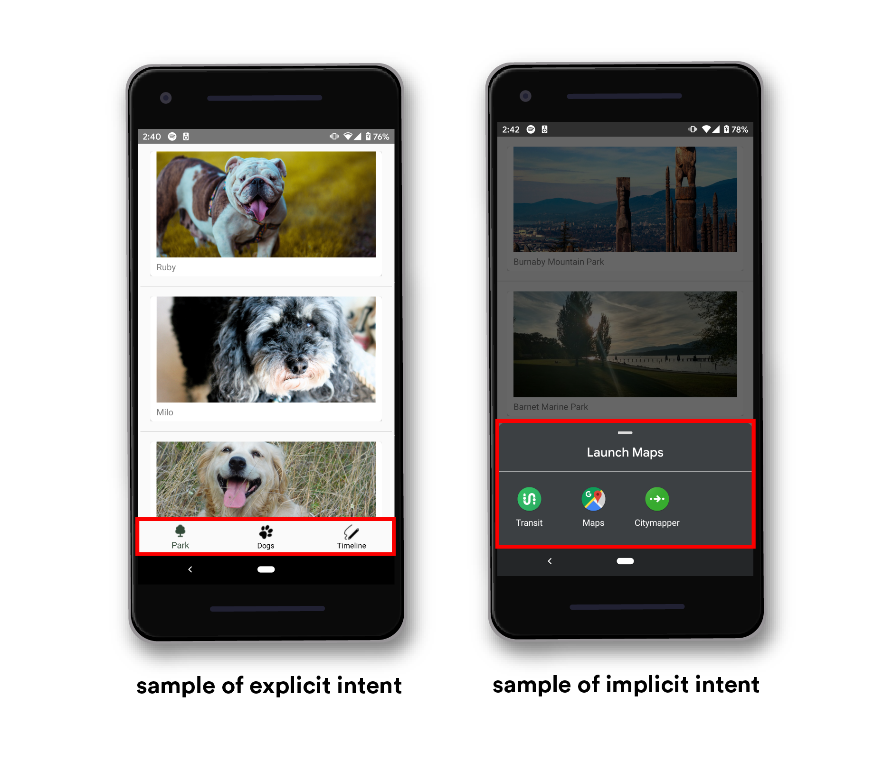
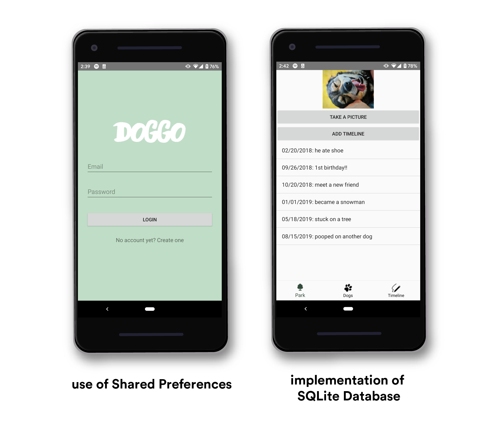
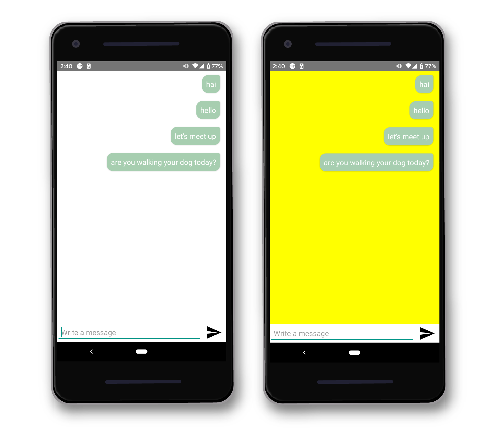
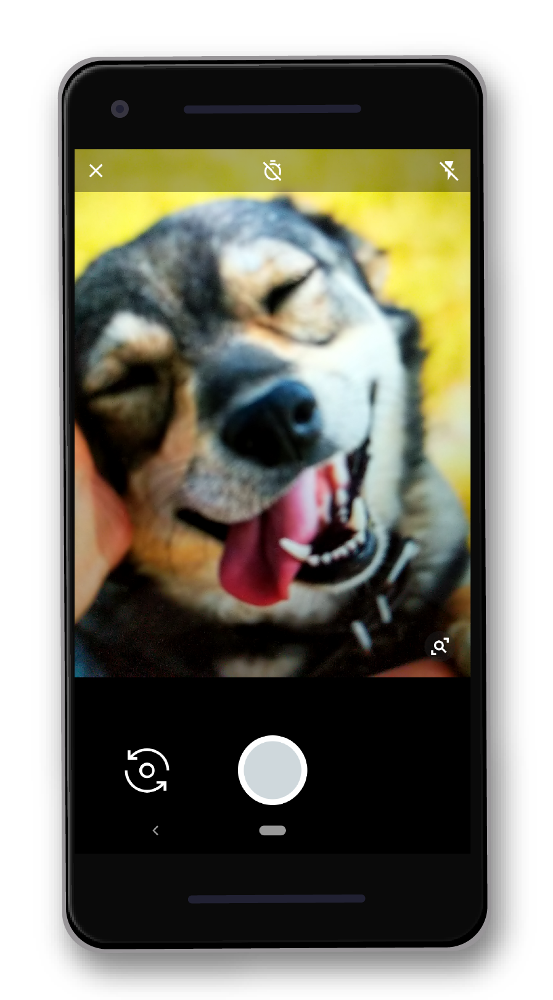
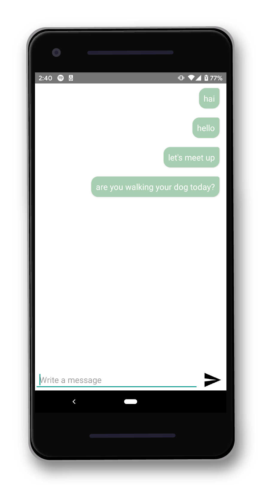

Wireframed the app's flow and to give me an idea what the interface design should look like when I program it using Android Studio.

I created 3 main actvities: Parks, Dogs, and Timeline Activity. Supporting actvities such as Login, SignUp, and Chat Activity.

SignUp, login activity and bottom navigations from activity to another are explicit intents. Using implicit intents, users are able to get transit directions from other applications available to support that intent. For example, the use of implicit intent when users are getting direction to a chosen park and use of an explicit intent is the bottom navigation bar allowing user navigate between activities.

User’s profile is saved in the shared preferences. The timeline is saved in SQL database and users are able to edit, add, and delete them. For example, once users sign up, user's information will be saved in Shared Preferences. Implementation of SQLite Database used in Timeline Activity.

The gyroscope sensor is used in the Chat Activity. The sensor is used to change the background color of the Chat Activity. When device is tilted clockwise, the background will be yellow and if it is tilted counter-clockwise, the background will be white.

I used a camera to take pictures and displayed in the timeline activity. The image is saved in an external storage.

The chat activity allows users to chat with other dog owners to arrange play dates and socialize. I build the chat activity using Scaledrone Java API client.
Implementing GPS/Camera: My initial plan was to use GPS to guide users from their current location to the park selected. However, after many trials and watching many tutorials, my app still crashes. So, instead of using GPS, I made it to an explicit intent which direct users to map applications.
Solution: I used Camera instead and since I ran out of time, I wasn’t able to make the image remain in the ImageView when coming back to that actvity. I was also unable to make each list have a specific image.
This was the first app that I have ever programmed. The course has taught me a lot more about Java and through this course I felt I am more confident in Java than ever before. Nonetheless, this course has taught me about SQLite Database and JSON which I believe is a great asset to have. I believe the Timeline Activity's interface can be better but I am proud of what I have created and I am proud that I was able to achieve all the requirements and combine them within an app.